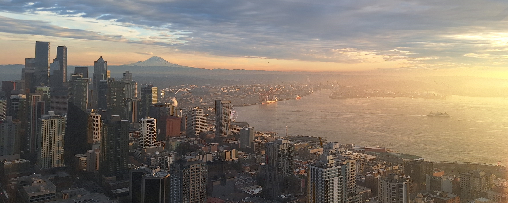
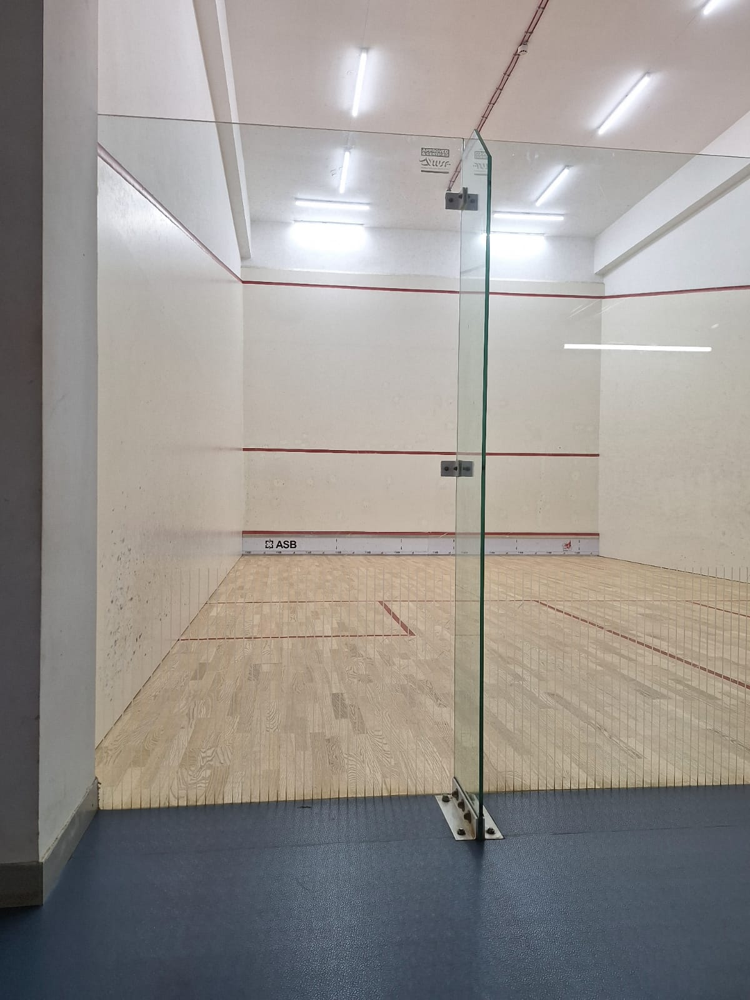
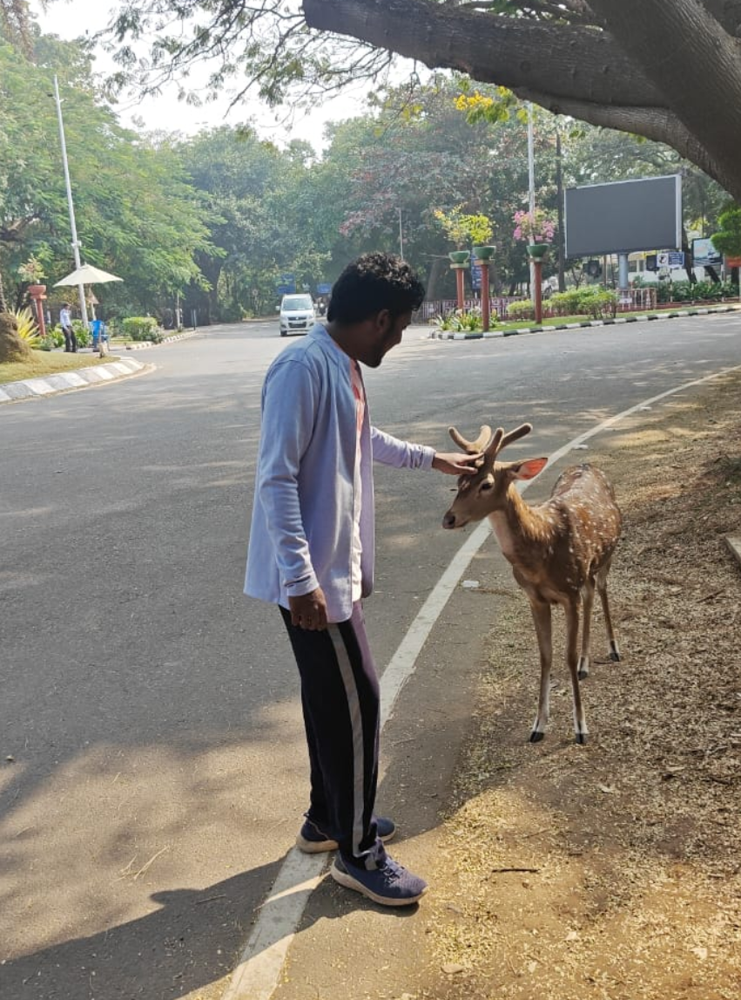
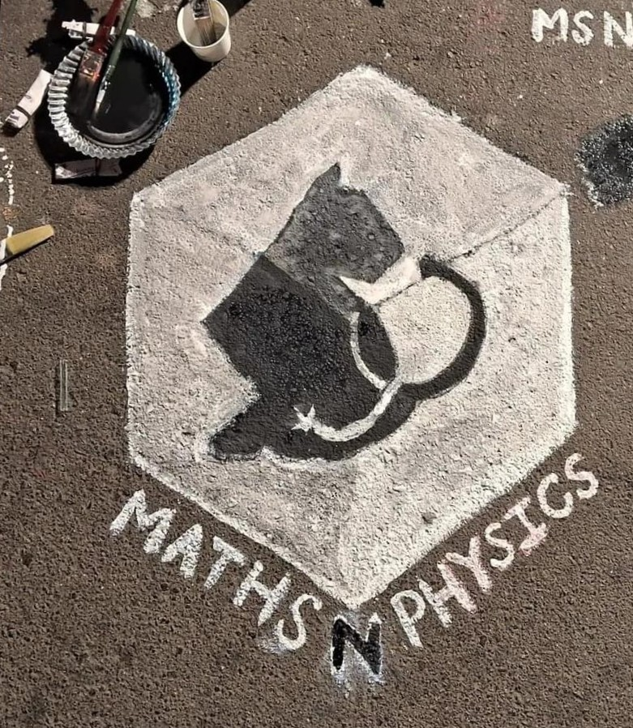

Seattle skyline at sunset with Mt. Rainier in the backdrop, January 2025
This page is my blogging platform of sorts - I aim to jot down and speak on stuff that I care about, things that I feel define who I am, here. It is also a rather convenient spot to dump a fraction of the vast multitude of pictures I have stowed in my phone's storage.
For my research expositions or academic exploits, head over to the respective sections.
Fav Pastimes
Squash

I was introduced to the sport in my freshman year, partly by accident as I was regular table tennis player then and the squash courts were right next door. Having grown up watching Root and Morgan in the Ashes followed by Özil and Wenger light up the Emirates, I was always into sports but had never played any professionally.
Following my childhood experience of playing cricket and football, I ventured into squash and my affinity for the sport grew rapidly. I loved table tennis but was annoyed by the spin aspect of the game which felt hard to control. Squash eliminated that and replaced it with agility which made it the perfect sport for me.
I learnt squash semi-professionally at my university's training camp and have played regularly ever since, aiming to get faster, stronger and simply better. Huge El Shorbagy and El Hammamy fan by the way :)
Debating

Unlike sports, I was barely active in any form of performing arts prior to college. Being an avid news reader and geopolitics enthusiast though I felt naturally drawn towards debating which presented a logical platform to present my views in a competitive setting.
That was an ideal amalgamation of attributes for any pursuit in my worldview and as anticipated, I enjoyed it immensely. While I came for the activity, it was the community that kept me affixed.
The debate society of IIT Bombay provided not just remarkably talented debaters to compete against, but also a group of fun like-minded folks to engage with outside of debating. Could not have asked for more :)
I've not been very active in competitions of late, but with a fair few adjudicator and speaker breaks alike I've tried to be as versatile and consistent as my practice would allow. I typically go as second speaker and tend to speak needlessly fast lol.
MnP Club

University goers' lives are often uniquely characterised by student clubs and societies, and mine was no different. Growing up I was very fond of non-routine mathematics and Olympiads largely shaped my teenage years, so it was natural for me to look for avenues in college where I can stay in touch.
The Maths & Physics Club was, to this end, ideal. I ventured in and found a lovely community of people most of who were equally enthusiastic about brainstorming over puzzles. I took up positions of responsibility within the club soon, starting as a Convener in my sophomore year and later becoming a Manager.
Leading the club was great fun - a newfound sense of authority - but was undeniably a learning experience as well. My tenure witnessed challenges and triumphs alike, and in the end was a very fulfilling and rewarding journey that I'm grateful for.